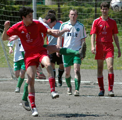
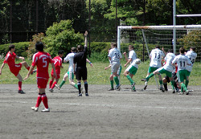

|
OiFuto 1, Sunday 29th April, Celts tamely rolled over to an average Swiss side with a talented Englishman and someone who claims to be Irish up front, several Japanese in midfield and defence, and perhaps a Swiss or two somewhere on the pitch. Whoever they have playing its doubtful they will have it so easy again.
Goal 1 came as our keeper (the 1st of the day) slipped when trying to change direction allowing the ball to innocuosly roll in from 25 yards.
Goal 2 was a free kick which perhaps should have been awarded as an indirect free kick for foot up, Kirk struck it well and the free kick was always on target - the keeper got a hand to it rendering the indirect argument void - but was unable to keep it out.
Goal 3 came when our 2nd keeper of the day failed to collect an innocuous through ball and Kirk knocked in
Goal 4 was a free header from a yard out after a corner
Goal 5 arrived when keeper 2 picked up a backpass and the resulting free kick was blasted in
Goal 6 was a Celts goal for a change, Swiss defender missed the ball and Henry smashed in from a tight angle via the keepers legs.
Goal 7 came direct from a corner eluding keeper 3 and the defender on the back post
Goal 8 was yet another free header from a yard out from a corner
7-1 and whatever could have gone wrong did. We were crap. No excuses here "That is TML" afterall
4 games to go against BFC, Geckoes, France & Jetro. The Celts results will decide both the relegation places and the title if BFC can avoid defeat against us.If the Celts can avoid playing the sh**e we did on Sunday then we may even have a chance of an upset. Geckoes and France before that in Les Crunches and Jetro to follow in an as yet unscheduled potentially decisive game.
Report by Ruairi Hatchell.
|